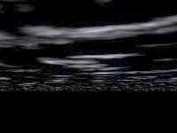
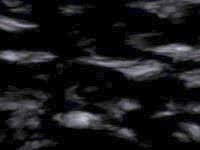

When you modify a Povray file executed from Geomorph,
start Geomorph from a X console, so that you can read the Povray error
messages.
When you modify a Povray file executed from Geomorph,
start Geomorph from a X console, so that you can read the Povray error
messages.| Version 0.40 and later Now it is sufficient to include geomorph.inc, which includes the three files. So the sequence is: #declare rock_color = 0.5*(<0.72,0.66,0.4>) ; #declare rock_turbulence=0.2; ... #include "geomorph.inc" |
| Plane version  |
Sky sphere
version  |
 There
is no ground plane in mountains.pov,
but you can find one in desert.pov
(shown) or in sea_and_rocks.pov.
There
is no ground plane in mountains.pov,
but you can find one in desert.pov
(shown) or in sea_and_rocks.pov.| Version 0.40 and later The height field should now be declared like this: #declare hf = height_field { png main_terrain ... "main_terrain" is a variable created in geomorph.inc. It contains the name of the current height field file, if it has been saved, or test.png, if not. The file also declares variables containing secondary height fields, like "water_map", "background_map", "ground_map" and "crater_map", for some scripts requiring them. |
 +
+ =
=
 =
=
 Back to the documentation index
Back to the documentation index